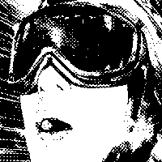
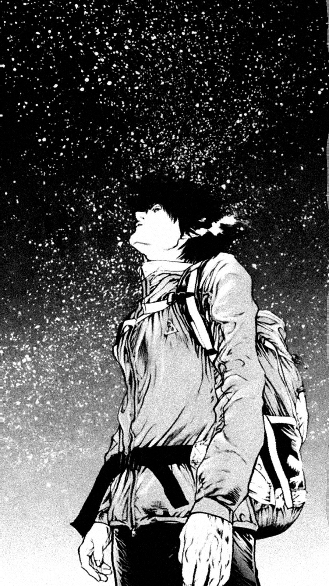

About
I'm Sharan Senthil, a student at Central Bucks South High School in Pennsylvania. I'm interested in computer science and computational biology, and I build things for science fair, for school clubs, and for fun.
I like engineering and research, and anything where you get to figure out how a system actually works. When I'm not doing that I'm looking at mountain photos, reading climbing stories, or rereading a manga about one very stubborn man on K2.
Timeline
Lead Mentor, Central Bucks South STEM Research Club
President, Central Bucks South Science Olympiad
Merchandise Director, Student STEM Experiential Learning Foundation (SSELF)
IT team, SSELF
Math and reading assistant, Kumon. Helped students aged 4 to 16 build foundations through guided practice.
Honors
- USACO Gold, USA Computing Olympiad, Feb 2026
- Certificate of Achievement, Delaware Valley Chapter PDA, Jun 2026, for research on a peptide to help prevent peanut allergic responses
The mountain thing
I want to climb and I haven't yet. The plan is to start with real hikes, learn the basics properly, and work up. I'll write about every attempt here, including the ones where I turn around early.

Contact
LinkedIn: linkedin.com/in/sharan-senthil-
Email: you@example.com
Or sign the guestbook.